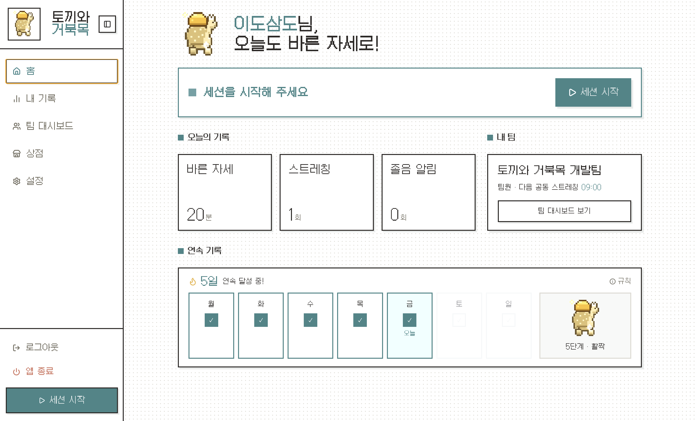
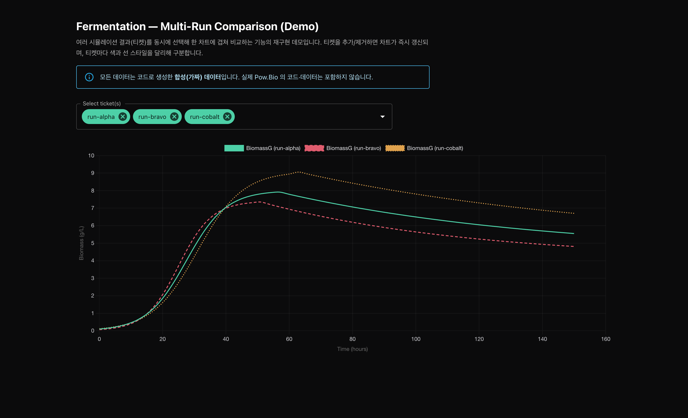

이도연
데이터에서 개발까지
Doyeon Lee
프로젝트
대전행 화물의 철도 전환 조건 분석
2026 물류데이터·AI 공모전 최우수상 수상작

길벗 Gilbeot
MOVE-AI Challenge 해커톤 결선 진출작

SSAFY 공통 프로젝트 3위 수상작

경제 뉴스 다이제스트 메일러
Kafka 기반 멀티에이전트 개인 프로젝트
그 외 프로젝트
SSAFY 15기 관통 프로젝트2026.05 – 06 · 2인 팀 (팀장)
BaroFarm — 신선식품 직거래 마켓 & 폐기위험 예측·동적 할인
SSAFY 15기 관통 프로젝트2026.05 – 06 · 2인 팀 (팀장)
BaroFarm — 신선식품 직거래 마켓 & 폐기위험 예측·동적 할인
신선식품은 유통기한이 짧아 소상공인 판매자에게 폐기 손실이 큰데, 기존 마켓은 임박 재고를 판매자가 수동으로 내려야 하고 소비자는 그 딜을 찾기 어렵습니다. 판매자에게는 폐기 위험을 미리 보여주고, 소비자에게는 마감임박 딜을 한곳에 모아주는 마켓으로 설계해, 커머스 백엔드와 배포 인프라를 단독으로 구현하고 클라우드 VM에 HTTPS 운영 배포까지 완주했습니다.
- 커머스 백엔드 단독 구현: Spring Boot/MyBatis 기반 CRUD와 JWT 인증(탈퇴 시 토큰 즉시 무효화·블랙리스트), BCrypt 전환, 배포 도메인 CORS 처리까지 인증·보안 흐름을 직접 설계했습니다.
- 폐기위험 엔진 & 동적 할인: 유통기한 D-day와 재고를 규칙 기반으로 평가해 폐기위험(HIGH/MED/LOW)을 산출하고, 위험도에 연동해 할인가가 바뀌는 로직을 구현했습니다. 가격은 주문 시 서버가 재계산해 청구하도록 설계해 클라이언트 가격 조작을 차단했습니다.
- 데이터 레이어: 실트래픽이 없어 행동로그를 파라메트릭 시뮬레이터로 합성(seed 고정·재현 가능)하고 서비스 시드로 변환하는 파이프라인을 만들었습니다. 데이터는 합성이되, 그 위에서 계산한 지표는 전부 실측임을 문서에 명시했습니다.
- AI 추천가: 상품 등록 시 KAMIS 소매 시세를 근거로 판매가를 추천하고(등락·단위 주의 문구까지 노출), 상품 설명은 gpt-4o-mini를 실호출해 생성했습니다.
- 배포/인프라: Docker Compose로 팀 개발환경을 통일하고, Caddy(HTTPS 리버스프록시) + GitHub Actions CI를 구성해 Oracle Cloud VM에 운영 배포했습니다. 혼합콘텐츠·CORS 403 등 배포 단계 이슈를 직접 해결했습니다.
- 설계 문서: 요구사항정의서·유스케이스·ERD·WBS·간트차트·화면설계 6종을 작성하고 버전 관리했습니다.
개인 프로젝트2026 · 단독 진행
브라질 이커머스 데이터로 본 '배송 지연 → 만족도 → 리텐션'
개인 프로젝트2026 · 단독 진행
브라질 이커머스 데이터로 본 '배송 지연 → 만족도 → 리텐션'


브라질 최대 이커머스 마켓플레이스 Olist의 공개 데이터 약 10만 건을 BigQuery에 올려, 배송 지연이 고객 만족도와 잔존율에 어떻게 작용하는지를 SQL로 정량화했습니다. 분석 결과를 Streamlit 대시보드로 묶어 변수를 직접 골라가며 확인할 수 있게 했습니다.
- 데이터 모델링: raw → staging → mart → analysis 4계층으로 분리해 분석 자산의 재현성과 재사용성을 확보했습니다. dbt에서 쓰는 디멘셔널 모델링 사상을 사이드 프로젝트에 적용해본 경험입니다.
- 지연 임계점 분석: 예상일 대비 지연 일수를 D≤0, D+1~2, D+3~4 단위로 버킷팅해 평점이 비선형적으로 무너지는 지점을 찾았습니다. 정시·조기 평점 4.28에서 D+3~4 구간 평점 2.58로 급락했고, 저평점률은 9.5%에서 53.5%까지 상승했습니다.
- 코호트 리텐션: 첫 주문 배송 경험에 따라 고객을 두 그룹(지연 vs 정시)으로 나누고 월별 잔존율을 비교했습니다. Olist는 재구매가 희소해 표본 안정성에 한계가 있다는 점도 함께 명시했습니다.
- 통계 추론: Welch t-test + Cohen's d + 95% 신뢰구간으로 그룹 간 평점 차이를 검정했습니다. 큰 표본에서 p-value의 한계를 인지하고 효과크기를 함께 보고했습니다.
- 인터랙티브 대시보드: Streamlit + BigQuery로 KPI 카드와 6개 탭(퍼널 / 통계 검정 / 배송 지연 / 지역 매칭 / 카테고리 / 리텐션)을 구성했고, 자격증명이 없으면 CSV 폴백으로도 띄울 수 있게 만들었습니다.
Pow.Bio · 미국2025.03 – 06 · Data Team 인턴
분석 플랫폼 'Cassie' UX/UI 개선
Pow.Bio · 미국2025.03 – 06 · Data Team 인턴
분석 플랫폼 'Cassie' UX/UI 개선

연구진이 매일 창을 여러 개 띄우고 이미지를 내려받아 실험 결과를 비교하던 불편을 인터뷰로 확인했습니다. React 기반 Cassie 대시보드에서 발효 시뮬레이션 결과를 티켓 단위로 조회하고, 여러 실행 결과를 한 차트에 겹쳐 비교할 수 있도록 데이터 흐름과 시각화 로직을 개선했습니다.
- 단일 티켓 조회 중심이던 UI를 단일·다중 티켓 선택 구조로 확장해, 여러 시뮬레이션 실행 결과를 한 화면에서 겹쳐 비교할 수 있게 했습니다.
- 서버 응답을 차트용 데이터(CSV·모델·rate·limiting)로 파싱해 차트 상태와 연결하고, 티켓을 추가·삭제하면 차트가 즉시 반영되도록 필터링·누적 갱신 로직을 개선했습니다. 선택을 해제한 티켓은 차트에서 바로 제거됩니다.
- React 컴포넌트 → API 응답 → 차트 렌더링으로 이어지는 전체 데이터 흐름을 플로우차트로 문서화해 유지보수성과 팀 내 커뮤니케이션을 높였습니다.
학사 학위 논문 · 성균관대 문헌정보학2025 · 단독 연구
생성형 AI 검색의 정보 구성 편향성 분석
학사 학위 논문 · 성균관대 문헌정보학2025 · 단독 연구
생성형 AI 검색의 정보 구성 편향성 분석
같은 질문에 ChatGPT와 Gemini가 어떤 출처를 들고 오는지 100건을 직접 라벨링해서 비교했습니다. 모호한 사례는 분류 규칙을 새로 정의해 다시 묶었고, 그 위에 통계 지표를 얹어 LLM 응답의 편향을 점수화하는 평가 모델까지 제안했습니다.
- 평가셋 직접 구축 & 라벨링: 사회·정책·환경·교육 등 10개 대표 쿼리를 설계했고, ChatGPT/Gemini 응답 상위 5건씩 총 100개 레코드를 출처(domain) · 정보유형(source type) · 주제 토픽 단위로 직접 라벨링해 CSV로 정형화했습니다.
- 모호 케이스 재분류 & 가이드라인 정의: news/com을 '언론 기반', gov/edu/org를 '공공·학술 기반'으로 묶는 등 모호한 source_type을 일관 규칙으로 재분류했습니다. 결측값(stance_tag, country_tag) 처리 기준을 정의해 KL/JS 연산의 일관성을 확보했습니다.
- 편향 정량화 모델: KL/JS divergence(엔진 간 분포 차이), Gini index(집중도), Shannon entropy(다양성)를 동일 가중으로 결합한 Bias Risk Score를 정의했습니다. ANOVA·χ² 검정으로 차이의 통계적 유의성을 확인했습니다.
- 핵심 발견: ChatGPT는 news·blog 등 언론 기반 출처 의존도가 높았고(JS divergence 0.69), Gemini는 academic·gov·nonprofit에 고르게 분포했습니다. 환경·감시 등 정책성 주제일수록 두 모델의 정보 구조가 구조적으로 다름을 검증했습니다.
- 실무적 의미: LLM 기반 정보 서비스의 출력 품질을 정량적으로 평가할 수 있는 틀입니다. RAG 평가셋 구축, 출처 신뢰도 검증, 환각·편향 리스크 분석 등 AI 안전성 영역으로 확장 가능합니다.
데이터마케팅코리아2024.03 – 06 · 데이터컨설팅팀 인턴
버즈 데이터 다루며 라벨링 기준 만들기
데이터마케팅코리아2024.03 – 06 · 데이터컨설팅팀 인턴
버즈 데이터 다루며 라벨링 기준 만들기
고객사의 ETF 플랫폼에서 네이버 검색·카페·블로그 같은 채널의 버즈 데이터를 매일 다뤘습니다. 키워드 추출 정확도를 떨어뜨리는 패턴을 찾아내, 분석가들이 같은 기준으로 데이터를 쓸 수 있도록 사전과 DB 명세서를 직접 정리했습니다.
- 텍스트 분석 진단: TF-IDF 기반 키워드 추출 모델이 'OO신문 · OO뉴스' 같은 언론사명에 과한 가중치를 주는 희소 행렬 문제를 발견했습니다. 단순 모델 교체가 아닌 '불용 패턴을 분류 기준으로 정의'하는 방향으로 접근했습니다.
- 도메인 사전 직접 구축 (라벨링 기준 정의): Python 정규표현식으로 '…신문 / …뉴스' 패턴 기반 불용어 후보를 자동 추출하고, 1만 행 규모의 사전을 구축했습니다. 매월 신규 데이터를 반영해 사전을 갱신·운영했고, DS팀의 코사인 유사도 측정 정확도를 개선했습니다.
- 가이드라인 표준화: 30여 개 DB 테이블의 컬럼·관계·정합성 규칙을 명세서로 정리하고 쿼리를 표준화했습니다. 신규 분석가가 별도 설명 없이도 일관된 기준으로 데이터에 접근할 수 있도록 만들었습니다.
- 오탐·누락 케이스 대응: 매일 적재되는 데이터를 SQL로 점검해 누락·중복·null을 탐지했고, 적재 오류 발생 시 DevOps에는 재현 경로를, 컨설팅팀에는 대시보드 영향을 따로 정리해 전달했습니다.
- 재현 데모: 회사 데이터는 공개할 수 없어, 같은 구조·품질 이슈를 합성 데이터로 재현해 SQL 품질 점검과 불용어 사전 기반 TF-IDF Before/After를 직접 보여드립니다. (데이터만 합성, 수치는 실제 계산) → 재현 데모 보기
개인 프로젝트2023.09 – 12
수도권 공공도서관 접근성 분석 & R Shiny 대시보드
개인 프로젝트2023.09 – 12
수도권 공공도서관 접근성 분석 & R Shiny 대시보드
수도권의 공공도서관이 지역별로 얼마나 다르게 접근되는지 공공데이터로 분석했습니다. 결과를 R Shiny 대시보드로 만들어, 보고서를 읽지 않아도 지역과 노선을 직접 골라가며 격차를 확인할 수 있게 했습니다.
- KOSIS·행정안전부 데이터 수집·정제, 회귀분석으로 이용률 영향요인 검증했습니다. '도서관당 인구수'로 지역 격차를 수치화했습니다.
- 지역·지하철 노선 필터가 있는 R Shiny 대시보드를 구현해 분석 결과를 보고서가 아닌 탐색 가능한 인터페이스로 전달했습니다.
성균관대 융합기초프로젝트2023.07 – 08 · 팀장 (5명)우수상 · 8팀 중 3위
수면 자세 교정 웨어러블 MVP
성균관대 융합기초프로젝트2023.07 – 08 · 팀장 (5명)우수상 · 8팀 중 3위
수면 자세 교정 웨어러블 MVP
초기 아이템(무인 포토부스)이 중간 평가에서 혹평을 받았습니다. 슬립테크 시장 데이터를 정리해 팀을 설득해 수면 자세 교정 기기로 방향을 바꿨고, 10일 만에 압력센서 기반 MVP를 만들어 실사용자 테스트까지 진행했습니다.
- 초기 아이디어(무인 포토부스)가 설득력이 없다고 판단해 시장조사·논문 데이터를 정리하고 팀을 설득했으며, 수면 자세 교정으로 피벗했습니다.
- 압력센서(FSR)+아두이노로 MVP를 제작했고, 실사용자 수면자세 측정 후 데이터를 시각화했습니다. 솔루션 가능성을 직접 검증했습니다.
- 카드 결제 이상거래 분석24M 거래 모니터링 → 드릴다운 → 예측
- 분리수거 VQAVLM LoRA 파인튜닝(학습 파라미터 0.57%), 3-seed 앙상블
- n8n 뉴스 요약 봇RSS → Claude 요약 → 메일 자동화
그동안 해온 일들최신 순으로 정리했습니다.
분석에서 멈추지 않고, 서비스를 만들어 배포까지
신선식품 판매자의 폐기 손실 문제를 잡아 마감임박 딜 마켓 'BaroFarm'을 만들었습니다. Spring Boot 백엔드와 유통기한 기반 폐기위험 산출·동적 할인 로직을 직접 구현하고, Docker와 GitHub Actions CI로 클라우드 VM에 HTTPS 운영 배포까지 완주했습니다.
브라질 이커머스 데이터로 코호트 돌려보기
이커머스 마켓플레이스에서 배송 지연이 고객 잔존에 어떻게 작용하는지 보고 싶었습니다. Olist 공개 데이터를 BigQuery에 올리고 raw→staging→mart 계층으로 정리한 뒤, 첫 주문에서 지연을 겪은 고객과 정시 배송 고객의 리텐션 차이를 직접 비교했습니다.
연구진이 답답해하는 부분을 찾아내고, 직접 고쳐보기
실험 결과를 비교하느라 매일 창을 여러 개 띄우고 이미지를 일일이 받던 연구진을 인터뷰한 뒤, 다중 티켓 비교 화면으로 바꿨습니다. React와 Node.js로 직접 구현해, 여러 결과를 한 화면에서 바로 겹쳐 비교할 수 있게 했습니다.
ChatGPT와 Gemini, 같은 질문에 어떤 출처를 바탕으로 대답할까
같은 질문 10개를 두 모델에 넣고 응답 100건을 받아서, 출처 유형과 주제를 하나씩 직접 라벨링했습니다. 모호한 사례는 분류 규칙을 새로 정의해 다시 묶었고, 그 위에 KL/JS divergence와 Gini, Entropy를 얹어 'Bias Risk Score'라는 평가 모델을 제안했습니다.
SQL로 매일 DB 내의 이상값 잡아내기
네이버 검색·카페·블로그·BigKinds 같은 채널에서 매일 들어오는 버즈 데이터를 SQL로 점검해 누락·중복·null 같은 이상값을 직접 잡아냈습니다. 그 위에서 1만 행 규모 불용어 사전과 DB 테이블 30여 개 명세서도 정리해, ML을 활용한 데이터 분석 결과의 정확도를 높이고자 했습니다.
피보팅
중간 평가에서 아이템이 망했을 때, 시장 데이터와 논문을 정리해 팀을 설득해 방향을 바꿨고 우수상을 받았습니다. 같은 해 혼자서는 공공도서관 접근성 데이터를 회귀분석하고, R Shiny로 조건을 지정하여 결과를 조회할 수 있는 대시보드를 만들었습니다.
프로필
dlehduslee@naver.com
github.com/doyeon-del
성균관대학교 문헌정보학 주전공 · 통계학 복수전공 2026.01 – 2026.12
삼성청년SW·AI아카데미(SSAFY) 15기 — 2학기 진행 중
Pow.Bio Data Team 인턴 (미국, WEST · 16주) 2024.03 – 2024.06
데이터마케팅코리아 데이터컨설팅팀 인턴 (16주)